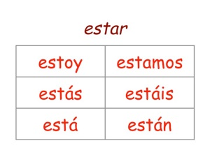

> 性格や外見など属性を表す形容詞を使って文を作る時は ser を用いるが、状態を表す形容詞を使って文を作る時は動詞 estar を用いる。 Ella es muy simpática. (She is very nice.) Ella está cansada porque tiene mucha tarea. (She is tired because she has many homeworks.) 同じ形容詞が属性を表したり、状態を表したりすることがある。意味の違いに注意しよう。 Ella es aburrida. (She is boring.) Ella está aburrida. (She is bored.) Eres bonita. (You are beautiful.) Estás bonita. (You look beautiful.) 状態を表す形容詞 adjetivos para expresar estado
